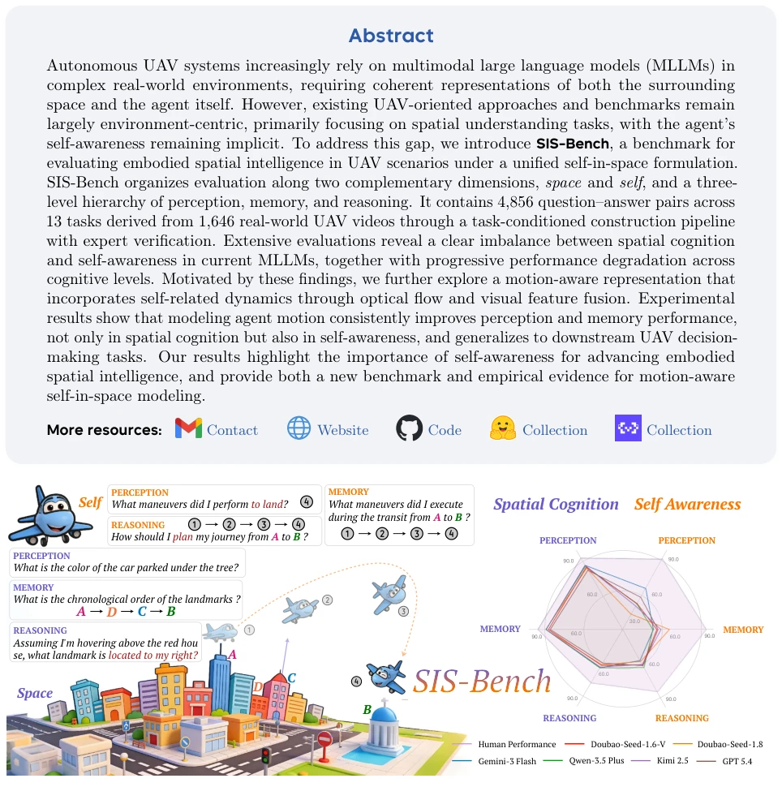
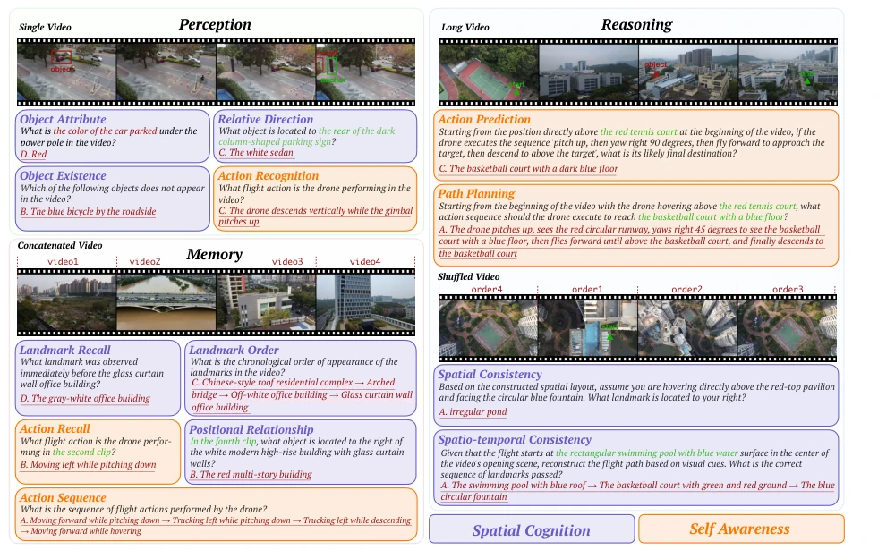
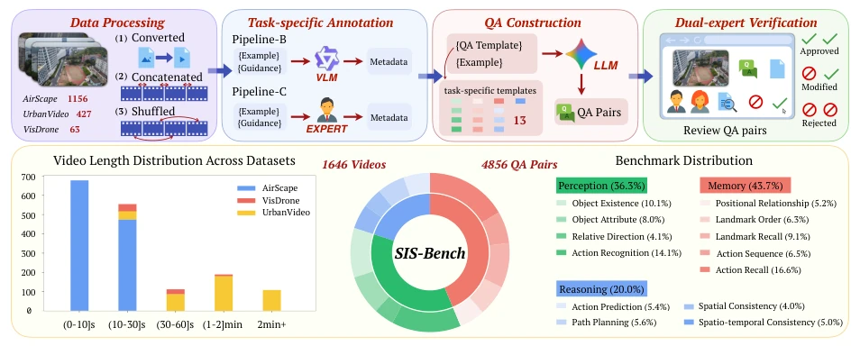
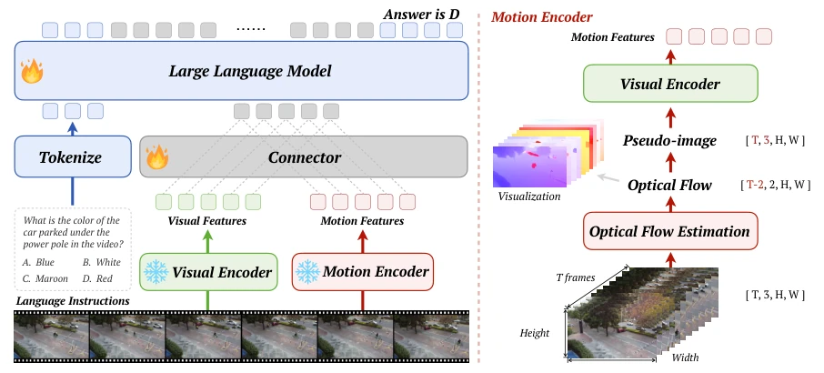
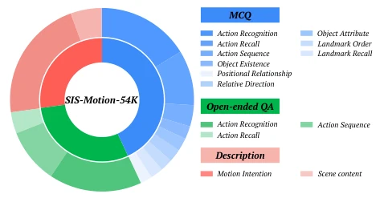
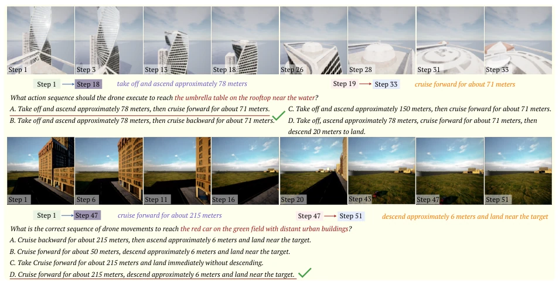
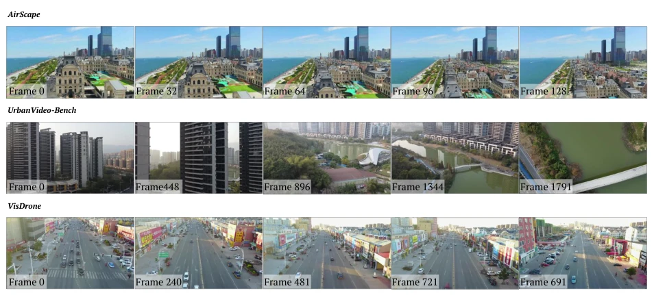
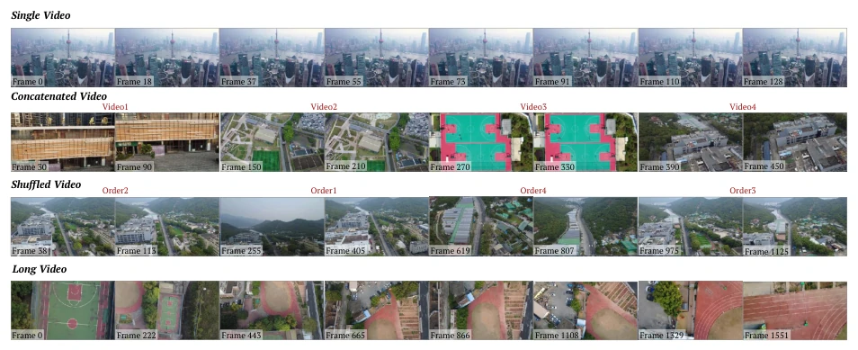
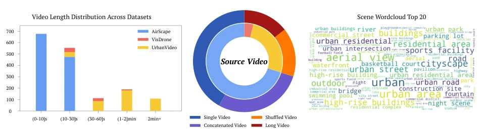
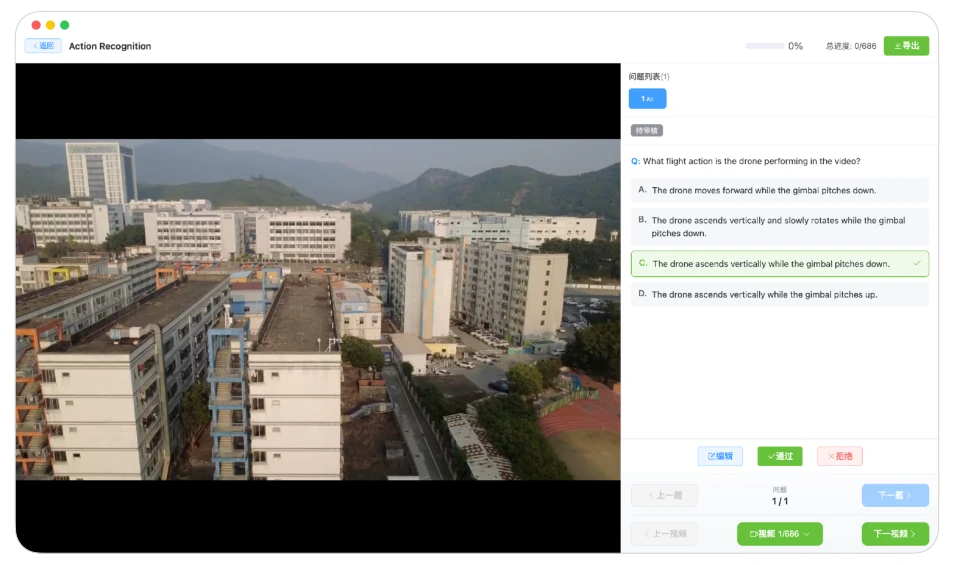

This paper finally transforms UAVs from "environmental observers" to "embodied participants". SIS-Bench's entry point is precise, directly targeting the "self-missing" pain point of MLLMs in UAV scenarios. However, the addition of the optical flow encoder is somewhat conservative, as optical flow is merely the shadow of motion rather than the essence itself. Human performance 91.7% versus model 71.6%, this 20-point gap indicates that "embodied intelligence" is still far from being embodied. Although SIS-Motion is proposed, its essence remains a simple concatenation of vision + optical flow, lacking deep modeling of physical dynamics. The benchmark scale is acceptable, but video sources rely on public datasets, coverage of real complex scenarios is insufficient, and reasoning task improvements are limited, showing that the current architecture still has bottlenecks in deep cognition.
Existing UAV intelligent research mostly focuses on environmental understanding and task completion, neglecting the agent's own state [12, 59]. Embodied intelligence requires unified modeling of external space and internal self [38, 58]. Current MLLMs lack explicit self-dynamic modeling in UAV scenarios, leading to an imbalance between spatial cognition and self-awareness. Existing benchmarks are mostly environment-centric, unable to evaluate UAVs' interaction capabilities as active entities, urgently needing a unified framework to assess the joint modeling capability of space and self. Especially, the impact of UAV viewpoint changes and motion on scene observation is not fully modeled, limiting the agent's decision consistency in dynamic environments.

Figure 1 Overview of SIS-Bench. Representative evaluation tasks are illustrated on the left. The right compares human performance with six proprietary models, where the purple-labeled axes represent spatial cognition tasks and the orange-labeled axes represent self-awareness tasks across perception, memory, and reasoning.
SIS-Bench adopts a four-stage construction process: data processing, task annotation, QA generation, dual-expert verification. Covering 13 tasks, 3 cognitive levels (perception, memory, reasoning) and 2 dimensions (space, self). The SIS-Motion framework introduces a dual-stream encoder; the visual encoder extracts scene semantics, the optical flow encoder converts optical flow into pseudo-image sequences input to ViT to extract motion features, fused via a lightweight connector. The training set SIS-Motion-54K includes three formats: MCQ, open QA, and description, strengthening joint supervision of motion perception and spatial grounding. This design maintains controlled variables, ensuring gains are attributed to motion perception.

Figure 2 Task illustrations of SIS-Bench. The benchmark evaluates 13 tasks under two dimensions (Spatial Cognition and Self-Awareness) and three cognitive levels. Perception is built from Single Video inputs, Memory from Concatenated Video inputs, and Reasoning from Long Video and Shuffled Video inputs, reflecting progressively higher cognitive demands. Colored boxes are for illustration only and are not part of the model input.

Figure 3 Overview of the SIS-Bench construction pipeline and statistics. The upper panel illustrates the four-stage protocol: Data Processing, Task-specific Annotation, QA Construction, and Dual-expert Verification. The lower panel details dataset statistics, including video-source composition, duration, and task-wise distribution across 13 categories.

Figure 4 Overview of the SIS-Motion framework. The architecture (left) comprises parallel encoders for synchronized visual and motion processing. The internal mechanism of the Motion Encoder is further elaborated on the right, showing the structural alignment of motion features into unified tokens compatible with large-scale language models.

Figure 5 Task distribution of SIS-Motion-54K across three formats: MCQ, Open-ended QA, and Description. where Φ denotes an optical-flow estimator (e.g., RAFT [47]). We then convert the flow into a 3-channel pseudo-image sequence: Pt = [∥Ut∥2 , Ux t , Uy t ] , P ∈RTf ×3×Hf ×Wf .
Tested on 26 MLLMs, finding spatial cognition significantly outperforms self-awareness, and decreases with cognitive levels. SIS-Motion improves perception and memory tasks on SIS-Bench, with limited improvement in reasoning tasks. Open-source and closed-source models show significant performance differences, with closed-source models being generally stronger. Downstream navigation tasks verify generalization, SIS-Motion accuracy reaches 92.2%. Ablation experiments show optical flow estimator selection affects robustness, MOFNet performs best. Human performance 91.7% versus model 71.6%, the gap is significant, indicating embodied cognition still has huge room for improvement.

Figure 6 Scenarios of the downstream UAV navigation task. Representative samples evaluate the drone’s decision- making and path-planning capabilities by requiring the model to choose the optimal flight sequence to reach a designated target.
其他图片Other Figures

Figure 7 Representative source videos used in SIS-Bench construction. Each row shows five temporally sampled frames from one example source video, with frame indices overlaid to indicate their original positions. From top to bottom, AirScape provides short action-centric clips, UrbanVideo-Bench provides long real-world urban flights with substantial viewpoint change, and VisDrone provides low-altitude urban street observations collected from frame sequences.

Figure 8 Representative examples of the four processed video types in SIS-Bench. From top to bottom: Single Video keeps one original clip and is shown with uniformly sampled frames; Concatenated Video stitches multiple short clips while preserving the order within each clip; Shuffled Video reorders several segments from a longer trajectory, and the segment labels indicate the presented order; Long Video preserves the original temporal order of a long flight. Frame indices are overlaid to show the sampling positions in the final processed video.

Figure 9 Statistics of the processed benchmark videos. Left: duration distribution across AirScape, UrbanVideo-Bench, and VisDrone, showing that AirScape mainly contributes short clips while UrbanVideo-Bench and VisDrone provide longer sequences. Center: composition of the processed video pool by construction type, including 689 Single Video samples, 467 Concatenated Video samples, 237 Long Video samples, and 253 Shuffled Video samples. Right: top-20 scene words, illustrating the diversity of benchmark environments.

Figure 10 Unified annotation and verification platform used for expert annotation in Pipeline-C and subsequent dual-expert QA verification.